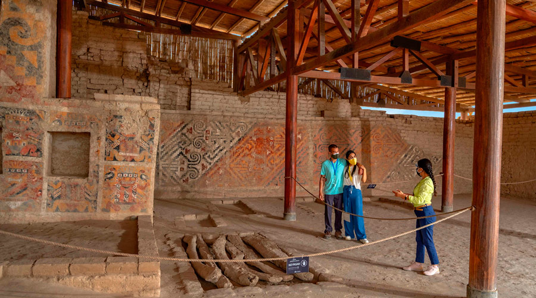
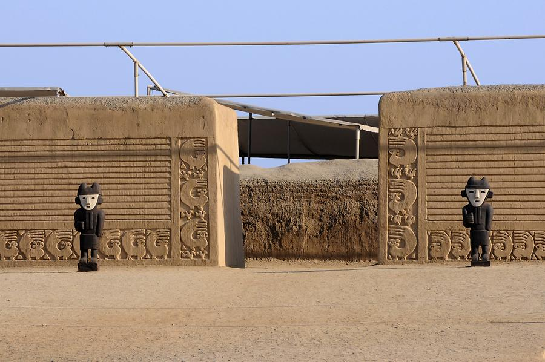
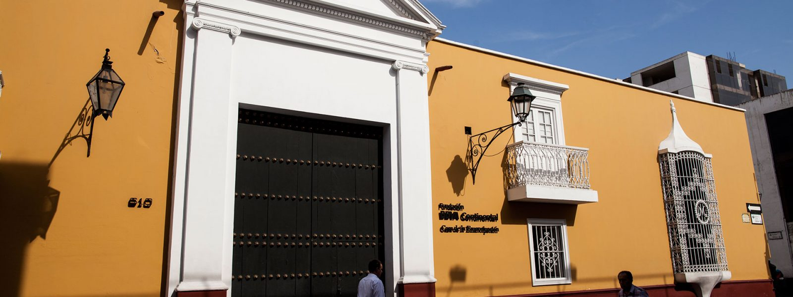

Inca Route: Start
Our TourPeruTravellers Itinerary :
1.- SUN AND MOON HUACAS TOUR – CHAN CHAN – HUANCHACO
2.- CITY TOUR IN TRUJILLO
In TourPeruTravellers, we offer you this magnificent inka route where you will enjoy the museums, archeaological sites, seaside.
Our TourPeruTravellers Itinerary :
1.- SUN AND MOON HUACAS TOUR – CHAN CHAN – HUANCHACO
2.- CITY TOUR IN TRUJILLO
 10:30 - Guided visit to the Moche Countryside, Site Museum of the Moche huacas, sighting of the Huaca del Sol, which was the most influential religious center of the Mochica culture. Visit to the Huaca de la Luna, which is made up of several superimposed platforms, decorated with paintings and high reliefs with the main characters of Mochica iconography, such as the figure of the slaughtering God, Ai Apaec.
Include:
Catacombs Tickets (Museum Guide). DRIVER GUIDE: SPANISH / English – PRIVATE SERVICE
13:00 - Lunch Time
 14:30 - The Tour begins at the Huaca Arco Iris, located in the Esperanza district, then we will visit the Tschudi or Nikan Palace, touring its environments. Finally we will enjoy Huanchaco, observing the "horses of torora, pier, craft walk". 6:00 p.m. approx. end of the tour.
 Breakfast Visit to the Historic Center of Trujillo (Plaza de Armas, Casa Urquiaga Cathedral, Casa Orbegoso, Casa Emancipación, Palacio Iturregui and Plazuela El Recreo) Opportune time Transfer to the bus terminal or airport.
Includes: Tickets and guide.
Our programme include:
➢ Transfer in / out
➢ 01 night accommodation at the chosen hotel.
➢ 01 breakfast
➢ Mobility available for visits.
➢ Official tourist guide + income